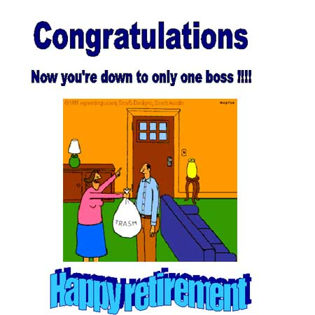
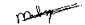

| |
Would you like to add to the Guest Book? Send me an email Tim Oxton 
| Belgium |
Danny, Serge, Fernando, Willy, Karine and Nicolas |
 |
| Belgium |
John Royemans |
Dear Tim.
I'm very happy for you that you will have time now to enjoy yourself on other matters than the bank's problems. As I am already retired for almost 5 years, I can tell you that these have been the best of my life. It's from the bottom of my heart that I wish you all the luck in this new area in your life.
Whenever you should be in Belgium, call me, e-mail me or send me a note. I will always be very happy to see you again and this time under more relaxing circumstances.
All the luck,
John Royemans
e-mail: jan.royemans@skynet.be |
| Belgium |
George Hartwell |
Tim,
So you finally managed to sneak away while I was on holiday. Shame on you. I was looking forward to seeing your consternation at the sight of your unwieldy but totally appropriate retirement present. Now you've turned the tables on me and I will have to bring it to the UK sometime and send it on to you!!
I assume the local left wing radical communist anti-establishment party will now have a willing and available co-worker to help during the general election. (Or was it the Monster Raving Looney Party?)
In all seriousness, though, best of luck for your retirement. Find something absorbing to keep yourself occupied and live life to the full.
Cheers
George Hartwell |
| Dubai, UAE |
Krishnan Vijayan |
Dear Tim,
It gives me immense pleasure to share with you the success of the IT
inspection that recently concluded at Lloyds TSB Dubai. As you may be aware,
Steve Whittock and David Weatherley were the officers deputed for
inspection of the IT systems here this time. Both Steve and David were very
happy to see the high level of IT excellence that has been achieved by the
branch over the last three years since the last inspection and also the
ongoing efforts to bring about greater automation in different procedures.
It is a matter of great pride for us that the IT dept at Dubai branch, under
the able leadership of Chris Colley, has been awarded a four star rating for
its performance this time.
Having said this, I would like to thank you Tim for having given us the
encouragement to experiment and initiate newer standards of working in
keeping with the technological advances being made around the world.
Interacting with you during your last trip to Dubai about 3 years back has
been a very novel experience for me and I shall always hold the memories
of our last meeting close to my heart.
I had the pleasure of having Steve and David over for a meal with me and my
family at home and it was nice to know about your activities from them. I
was happy to note that you are keeping yourselves engaged productively and
that you even have a web address. I went through your site and found it
really interesting.
I would like to wish you all the very best in all your endeavours and hope
we would have more opportunities of interacting with each other in the
future. My wife and daughter send you their warm regards.
Should you happen to come to Dubai, please do get in touch. It would be a
pleasure to meet you again.
With regards,
Krishnan Vijayan |
| Netherlands |
Marcel Schippers |
Dear Tim,
I have heard that you are retiring soon. Although you well deserve this, it is a shame that we lose one of the characters of the bank. You inspected the Amsterdam branch before I even joined (November 77) but since I met you (I believe early 80's), I always enjoyed having you inspected the Netherlands. I thought you were always fair and understood that small branches like Amsterdam had different problems that larger branches and therefore had problems following the rules. You even helped us, when necessary, challenging the rules. Off course heavy discussions concerning issues were often followed by a visit to the pub to have more discussions and a beer or two or three. These "discussions" were much enjoyed.
Unfortunately we did not have the pleasure of being "inspected" by you the last years but you always kept us informed if you found out something what could be of interested to us.
I hope you enjoy a well deserved retirement and that you do not miss the bank too much.
Take care and keep in touch.
Best regards,

Marcel
Lloyds Bank international LTD
Lloyds Bank Benelux.
Lloyds Bank plc.
Lloyds TSB Bank plc. |
| Netherlands |
Teus Gerzee |
Tim -
I remember you always as an Inspector with a great variety of interest and when you were over here for three weeks the first two were always relaxed and a lot of ground [not specific to work] was covered. Only in the last week did you raise difficult questions and do overtime to get the job finished.
Kindest regards - Teus Gerzee Amsterdam Branch |
| Netherlands |
Leo Dirven, Teus Gerzee, Henk Tjia and Liz Slingerland |
Tim -
We hope that you will enjoy your retirement and all of the spare time you now have. We want to wish you all the best in your futher life and we thank you for being a very nice person during the inspections over here. We always found your inspections of a good quality and also appreciate your positive comments and we will surely miss you in the future.
Kindest regards - Leo Dirven, Teus Gerzee, Henk Tjia and Liz Slingerland from Amsterdam Branch. |
| Netherlands |
Alison Smith |
Hi Tim,
I've just had a trip to your website and loved all the pictures - you haven't changed one bit! It was also nice to see some familiar faces, Myra from Panama, David Weatherley, Steve Blagden (he was my admin. manager when I was a trainee in Gibraltar. I never forget how kind he was to me when I'd just arrived there.) The web-site was a great idea for a leaving gift, very original.
I'll root out my inspection photos and if I find any of interest to you I'll send them via e-mail.
Bye for now
Alison |
| Switzerland |
Claude Teichmann |
We wish you all the best for your retirement.
After having extensively travelled all over the world, we hope that you will be able to enjoy your sweet home while cherishing many happy memories from 22 years in International Audit at Lloyds.
There is a song in German that states that at 60 life really starts.
So, happy start from Swiss Internal Audit Team.
Claude |
| Switzerland |
Mark Preston |
Tim,
Your e-mail and co-ordinates of the web-site only got to me about a week ago and, being in the middle of one of those internal changes of career direction that seems to have been typical of all of we LBI 'oldies', I have only now got around to dropping this line to you, in the calm of a Geneva Sunday afternoon.
Your site made fascinating reading, and I realized that, for someone whom I have known for many years (ironically it dates from Geneva in 1980, when you and John Franck came to do an audit of a department then called EDP - and look what it has mushroomed to, to find itself under the same set of EDP initials but this time those of its leader !), I knew surprisingly little ! I had no idea that you were a fellow 'classicist', but suppose I could have intuitively worked that out. I
only know that you have far more efforts at keeping in touch than I have over these years, and I can only say that it has been my loss for being such a dismal correspondent.
The term 'valedictory' sounds awfully final and so I nonetheless hope that the inveterate globe-trotter in you will bring you to Switzerland at one point again. On the other hand it looks as if I will become a more frequent visitor to the UK in the future and so that may also provide the opportunity to catch up some years of news.
Kind regards to you and Anna, and a hale and hearty retirement for you both,
Mark Preston. |
All guest book pages:
1 2 3 4 5 6 7
|
|